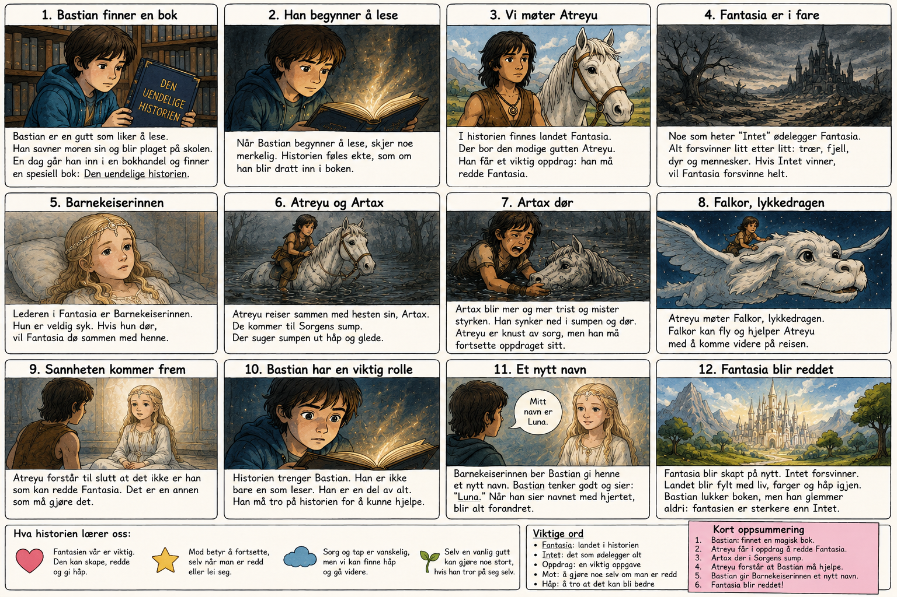

Bastian er en gutt på Edels alder.
Han liker bøker veldig godt.
Men Bastian har det ikke så lett.
Moren hans er død. Han savner henne mye.
På skolen blir han plaget av noen gutter.
En dag løper Bastian inn i en bokhandel.
Der finner han en bok. Den heter «Den uendelige historien».
Bastian begynner å lese.
Men denne boken er ikke vanlig.
Det føles som om boken vet hvem Bastian er.
I boken finnes et magisk land. Det heter Fantasia.
Men noe farlig skjer.
Fantasia blir ødelagt av «Intet».
🌫️ Intet betyr tomhet – noe som gjør at alt forsvinner.Trær forsvinner. Fjell forsvinner. Håp forsvinner.
I Fantasia bor gutten Atreyu.
Han får et viktig oppdrag.
🎯 Et oppdrag er en viktig oppgave.Han må finne en måte å redde Fantasia på.
Atreyu er modig.
Han er ikke modig fordi han aldri er redd.
Han er modig fordi han fortsetter selv om han er redd.
Atreyu reiser sammen med hesten sin. Hesten heter Artax.
Artax er vennen hans.
De kommer til en farlig sump. Den heter Sorgens sump.
I denne sumpen blir man tung inni seg. Man mister håp.
Artax blir for trist. Han synker ned i sumpen og dør.
Atreyu blir knust. Han mister en venn.
💧 Sorg betyr å være veldig lei seg fordi man har mistet noen.Likevel må Atreyu gå videre.
Det betyr ikke at han ikke bryr seg.
Det betyr at oppdraget fortsatt er viktig.
Fantasia har en leder. Hun heter Barnekeiserinnen.
Hun er syk. Når hun blir svakere, blir Fantasia også svakere.
Bastian sitter og leser boken.
Etter hvert forstår han noe viktig.
Historien trenger ham også.
Bastian må også være modig. Han må tro på historien.
Han gir Barnekeiserinnen et nytt navn.
Da kommer Fantasia tilbake!
Historien handler om fantasi.
Men den handler også om sorg, mot og håp.
🕊️ Håp betyr å tro at noe kan bli bedre.Bastian har mistet moren sin. Atreyu mister Artax.
Begge opplever sorg. Men begge finner en måte å fortsette på.
Å fortsette betyr ikke at sorgen er borte.
Det betyr at man fortsatt kan finne håp. 💛

Last opp «uendelige-historien.png» på GitHub, så vises bildet her 📖